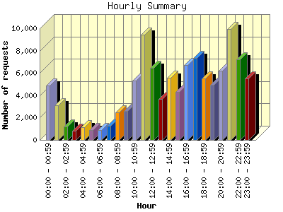
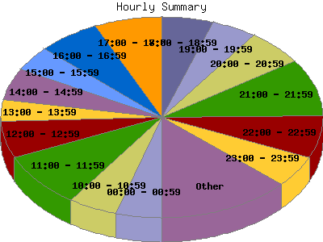

Report generated by Analog 6.0 and Report Magic 2.21
|
Web Server Statistics for "Harish Narayanan (hnarayan) - April 2007" Report generated by Analog 6.0 and Report Magic 2.21 |
The Hourly Summary identifies the level of activity broken down by each hour. Remember that one page hit can result in several server requests as the images for each page are loaded. This summary also compares the level of activity during working hours and after hours as a total for the report time frame.


| Hour | Number of requests | Number of bytes transferred | Percentage of the bytes | Percentage of the requests | |
|---|---|---|---|---|---|
| 1. | 00:00 - 00:59 | 4,872 | 73.877 MB | 2.97% | 4.54% |
| 2. | 01:00 - 01:59 | 3,117 | 80.498 MB | 3.24% | 2.90% |
| 3. | 02:00 - 02:59 | 1,182 | 106.027 MB | 4.26% | 1.10% |
| 4. | 03:00 - 03:59 | 804 | 66.505 MB | 2.67% | 0.75% |
| 5. | 04:00 - 04:59 | 1,110 | 60.274 MB | 2.42% | 1.03% |
| 6. | 05:00 - 05:59 | 895 | 48.110 MB | 1.94% | 0.83% |
| 7. | 06:00 - 06:59 | 871 | 53.178 MB | 2.14% | 0.81% |
| 8. | 07:00 - 07:59 | 1,287 | 99.104 MB | 3.99% | 1.20% |
| 9. | 08:00 - 08:59 | 2,457 | 50.473 MB | 2.03% | 2.29% |
| 10. | 09:00 - 09:59 | 2,583 | 87.713 MB | 3.53% | 2.41% |
| 11. | 10:00 - 10:59 | 5,340 | 96.043 MB | 3.86% | 4.98% |
| 12. | 11:00 - 11:59 | 9,457 | 150.862 MB | 6.07% | 8.81% |
| 13. | 12:00 - 12:59 | 6,462 | 158.793 MB | 6.39% | 6.02% |
| 14. | 13:00 - 13:59 | 3,673 | 171.838 MB | 6.91% | 3.42% |
| 15. | 14:00 - 14:59 | 5,555 | 102.209 MB | 4.11% | 5.18% |
| 16. | 15:00 - 15:59 | 4,298 | 155.413 MB | 6.25% | 4.01% |
| 17. | 16:00 - 16:59 | 6,688 | 122.867 MB | 4.94% | 6.23% |
| 18. | 17:00 - 17:59 | 7,337 | 139.944 MB | 5.63% | 6.84% |
| 19. | 18:00 - 18:59 | 5,536 | 103.783 MB | 4.17% | 5.16% |
| 20. | 19:00 - 19:59 | 4,951 | 70.076 MB | 2.82% | 4.61% |
| 21. | 20:00 - 20:59 | 6,171 | 99.402 MB | 4.00% | 5.75% |
| 22. | 21:00 - 21:59 | 9,953 | 170.871 MB | 6.87% | 9.28% |
| 23. | 22:00 - 22:59 | 7,213 | 131.908 MB | 5.31% | 6.72% |
| 24. | 23:00 - 23:59 | 5,490 | 86.320 MB | 3.47% | 5.12% |
| Work Hours (8:00am-4:59pm) | 46,513 | 1.071 GB | 44.09% | 43.35% | |
| After Hours (5:00pm-7:59am) | 60,789 | 1.357 GB | 55.91% | 56.65% | |
This report was generated on May 10, 2007 10:49.
Report time frame April 1, 2007 00:00 to April 30, 2007 23:54.
| Web statistics report produced by: | |
 Analog 6.0 Analog 6.0 |  Report Magic 2.21 Report Magic 2.21 |